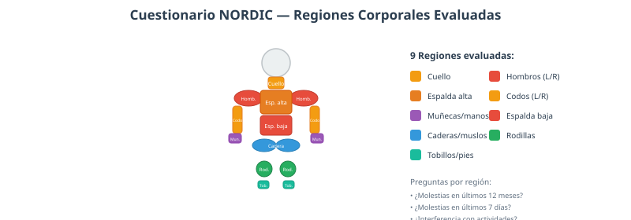
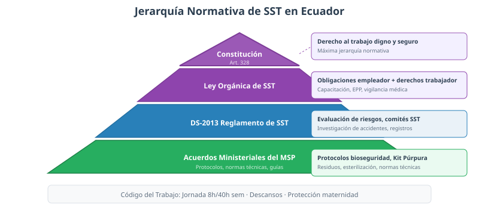
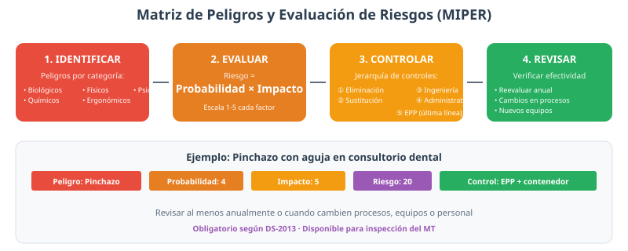

Protocolos y Normativa en Seguridad y Salud en el Trabajo
Protocolos de Evaluación Ergonómica
▼La evaluación ergonómica es el proceso para identificar, cuantificar y evaluar los factores de riesgo en un puesto de trabajo. En odontología, los procedimientos obligan al profesional a mantener posturas estáticas prolongadas y realizar movimientos repetitivos de precisión.
Herramientas de análisis postural

- RULA (Rapid Upper Limb Assessment): McAtamney y Corlett (1993). Evalúa miembros superiores: brazo (3 posiciones), antebrazo (2), muñeca (2 con desviación cubital/radial) y cuello (3). Genera puntuación de 1 a 7 con niveles de acción: nivel 1 (postura aceptable), niveles 2-3 (investigar y considerar cambios), niveles 4-6 (cambiar en plazo determinado), nivel 7 (cambiar ya). Útil en odontología porque evalúa las posturas de los miembros superiores, las más comprometidas en la práctica clínica.
- REBA (Rapid Entire Body Assessment): Hignett y McAtamney (2000). Evalúa todo el cuerpo en dos grupos: Grupo A (tronco, cuello, piernas) y Grupo B (brazos, antebrazos, muñecas). Más sensible que RULA para detectar riesgos en posturas dinámicas y combinaciones de sentado y de pie.
- Método OSHA: Identificación de peligros ergonómicos por observación directa. Evalúa posturas forzadas, movimientos repetitivos, vibración y carga. Escala de severidad: sin riesgo, riesgo moderado, riesgo alto. Fácil de aplicar en el consultorio.
- Cuestionario NORDIC: Kuorinka et al. (1987). Autoevaluación de molestias musculoesqueléticas en 9 regiones corporales (cuello, hombros, espalda alta, espalda baja, codos, muñecas/manos, caderas, rodillas, tobillos). Pregunta por molestias en los últimos 12 meses, últimos 7 días, impacto en actividades diarias y absentismo. Es la herramienta epidemiológica estándar para comparar prevalencia de LMS.
Protocolo de evaluación ergonómica (8 pasos)
- Observación directa: Observar al odontólogo durante al menos 3 procedimientos diferentes (operatoria, endodoncia, cirugía), registrando posturas, ángulos articulares, movimientos repetitivos y alcances fuera de la zona de trabajo.
- Documentación: Fotos y/o video del odontólogo durante los procedimientos para un análisis más detallado.
- Evaluación postural: Aplicar RULA o REBA según el procedimiento, registrando las puntuaciones y los niveles de acción.
- Autoevaluación del personal: Aplicar el cuestionario NORDIC a todo el personal para identificar la prevalencia de LMS y su impacto en la capacidad de trabajo.
- Análisis de resultados: Identificar las posturas de mayor riesgo (puntuaciones RULA o REBA > 4), las articulaciones más comprometidas, la frecuencia de movimientos repetitivos y la prevalencia de síntomas.
- Diseño del plan de intervención: Cambios en el equipo (altura del sillón, soporte lumbar), en la organización (pausas activas, distribución de tareas), en la capacitación (posturas correctas) y en el ambiente (iluminación).
- Implementación: Ejecutar las intervenciones con la participación del personal.
- Reevaluación: Verificar la efectividad de los cambios a los 3 meses.
Normativas Legales en Ecuador
▼Jerarquía normativa

La legislación ecuatoriana en materia de SST se estructura en niveles jerarquizados:
- Constitución de la República (2008): Art. 328 — derecho al trabajo en condiciones dignas, justas y adecuadas, en un ambiente sano y seguro. Art. 327 — seguridad social obligatoria. Art. 3 — la salud es derecho de las personas y función prioritaria del Estado. Es la norma de máxima jerarquía.
- Ley Orgánica de Seguridad y Salud en el Trabajo: Desarrolla los principios constitucionales. Obligaciones del empleador: proporcionar EPP adecuado, capacitar continuamente, investigar todos los accidentes e incidentes, mantener condiciones sanitarias, implementar vigilancia médica. Derechos del trabajador: capacitación, uso de EPP, reporte sin represalias, atención médica inmediata.
- DS-2013 (Reglamento de SST): Instrumento más específico. Requisitos: evaluación de riesgos (obligatoria, periódica, documentada), plan de prevención, capacitación continua con registros, investigación de todos los eventos (accidentes, incidentes, "casi accidentes"), comité de SST (obligatorio con más de 10 trabajadores), vigilancia médica (pre-empleo y periódica), registros de seguridad.
- Acuerdos Ministeriales del MSP: Protocolos de bioseguridad, reglamento de residuos, Kit Púrpura, normas técnicas de esterilización.
- Código del Trabajo: Art. 148 — jornada máxima 8h/día, 40h/semana. Art. 151 — descanso 15 min en jornadas >6h. Art. 155 — descanso semanal remunerado. Art. 160 — protección de maternidad (15 semanas).
Permisos de funcionamiento para consultorios dentales
El permiso de funcionamiento es un documento legal obligatorio. Su obtención implica la verificación de:
- Infraestructura: Según Norma Técnica del MSP (áreas mínimas, ventilación cruzada, iluminación, pisos lavables y antideslizantes).
- Protocolos documentados: Lavado de manos, limpieza y desinfección, manejo de residuos, Kit Púrpura.
- Personal capacitado: Certificados de formación en SST para todo el personal.
- Equipamiento: Autoclave funcionando, aspirador dental, kit de emergencia médica, contenedores de residuos adecuados.
- Plan de emergencia: Documentado y comunicado a todo el personal.
- Vigilancia médica: Exámenes médicos pre-empleo y periódicos del personal.
Matrices de gestión en SST

- MIPER (Matriz de Identificación de Peligros y Evaluación de Riesgos): Identifica todos los peligros (biológicos, químicos, físicos, ergonómicos, psicosociales), evalúa el riesgo con Riesgo = Probabilidad × Consecuencia, y establece controles jerárquicos: 1) Eliminación, 2) Sustitución, 3) Ingeniería, 4) Administrativos, 5) EPP (última línea de defensa). Revisión anual o cuando cambien procesos, equipos o personal.
- Matriz de Legalidad: Verifica el cumplimiento de la normativa aplicable. Enumera las normas, sus disposiciones, el estado de cumplimiento (cumplido/parcial/no cumplido) y acciones correctivas. Útil para consultorios ante inspecciones del MT o MSP.
- Plan de Emergencia: Procedimientos documentados ante accidentes, incendios, sismos, exposiciones a sustancias peligrosas, fugas de gases. Incluye rutas de evacuación, puntos de reunión y brigadas de emergencia.
Reglamento de Bioseguridad del MSP
▼Instrumentos del MSP Ecuador
El Ministerio de Salud Pública tiene un sistema de normativa que regula la bioseguridad en todos los establecimientos de salud del país:
- Reglamento de Bioseguridad: Marco general de obligaciones y procedimientos para todos los establecimientos de salud, público y privado. Define niveles de bioseguridad, EPP obligatorio, procedimientos de limpieza y desinfección, manejo de residuos y requisitos de capacitación.
- Kit Púrpura: Paquete de medicamentos profilácticos para accidentes de exposición ocupacional. Contiene antirretrovirales para prevenir la transmisión de HIV, HBV y HCV.
- Norma Técnica de Esterilización: Estandariza los procedimientos de limpieza, desinfección y esterilización con estándares de calidad verificables.
- Reglamento de Residuos Biosanitarios: Clasificación, manejo, almacenamiento y disposición final de residuos generados en establecimientos de salud.
Kit Púrpura — Profilaxis post-exposición
Medicamentos que deben iniciarse dentro de las primeras 72 horas tras el AEE (idealmente en las primeras 2 horas):
- Para HIV: Tenofovir (300 mg/día) + Emtricitabina (200 mg/día) + Raltegravir (400 mg cada 12 horas) durante 28 días. La adherencia completa es crucial para la eficacia.
- Para Hepatitis B: Si el trabajador no tiene anticuerpos protectores (anti-HBs < 10 mUI/mL), se administra Inmunoglobulina Anti-Hepatitis B (HBIG) y se inicia o refuerza el esquema de vacunación.
- Para Hepatitis C: No existe profilaxis disponible. El manejo se limita al seguimiento serológico a los 3, 6 y 12 meses.
Medidas preventivas del Kit Púrpura
- Uso obligatorio y correcto de EPP antes de cada procedimiento.
- Lavado de manos siguiendo la técnica de la OMS antes y después de cada paciente.
- Técnicas correctas de manejo de instrumental cortopunzante.
- Uso exclusivo de contenedores rígidos irrompibles con tapa de cierre hermético y pedal de apertura para residuos cortopunzantes.
- Prohibición de doblar, quebrar o manipular manualmente agujas u otros elementos cortopunzantes.
- Vacunación completa y verificada contra Hepatitis B.
- Capacitación continua del personal en técnicas de prevención de AEE.
Reglamento de Residuos Biosanitarios
El Reglamento de Manejo de Residuos del MSP establece un sistema de clasificación, manejo, almacenamiento y disposición final. El incumplimiento puede traer sanciones administrativas, civiles e incluso penales.
- Infecciosos (Contenedor Rojo): Gasas, guantes, material que estuvo en contacto con sangre o fluidos. Container rígido con tapa hermética y pedal.
- Cortopunzantes (Contenedor Amarillo): Agujas, bisturís, brocas, limas. Container irrompible, nunca llenar más de ¾.
- Químicos (Contenedor Gris/Blanco): Solventes orgánicos, amalgama residual, formaldehído, ácidos. Contenedor específico según compatibilidad química.
- Farmacéuticos (Contenedor Azul): Medicamentos vencidos, antibióticos no utilizados, vacunas caducadas.
- Generales (Contenedor Negro): Papel, cartón, envases no contaminados.
Transporte interno: En carros cerrados con ruedas, sin riesgo de derrame, por ruta que no cruce áreas de pacientes. Almacenamiento temporal: Máximo 48 horas a temperatura ambiente; residuos infecciosos a 4°C. Disposición final: Exclusivamente por empresas autorizadas por el MSP y el Ministerio del Ambiente (MAE), documentada con manifiestos de residuos.
Protocolo y Código Púrpura
▼Protocolo Púrpura — Medidas Preventivas
El Protocolo Púrpura es la norma del MSP que establece las medidas preventivas para evitar accidentes de exposición ocupacional (AEE). Su implementación es obligatoria en todos los establecimientos de salud.
- Uso obligatorio de EPP completo antes de cada procedimiento.
- Lavado de manos con técnica OMS antes y después de cada paciente.
- Manejo correcto de instrumental cortopunzante: nunca reencapuchar agujas manualmente.
- Contenedores rígidos irrompibles con pedal en cada zona de procedimiento.
- Vacunación completa contra Hepatitis B verificada con serología.
- Capacitación continua del personal en prevención de AEE.
- Supervisión y auditoría periódica del cumplimiento de protocolos.
Código Púrpura — Procedimientos Post-Exposición
Cuando ha ocurrido un AEE, se activa el protocolo de atención que incluye:
- Contención inmediata: Lavado del sitio de exposición según la vía (pinchazo, mucosa, piel).
- Reporte: Documentación obligatoria del incidente en formato oficial.
- Evaluación del riesgo: Identificación del paciente fuente y pruebas serológicas.
- Profilaxis: Administración del Kit Púrpura dentro de las primeras 72 horas.
- Seguimiento: Controles serológicos a los 3, 6 y 12 meses (HIV hasta 18 meses).